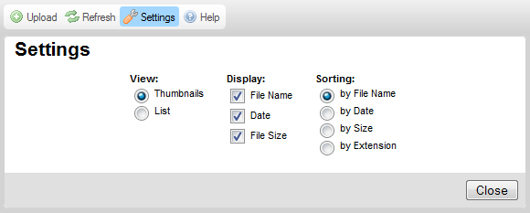
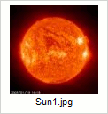
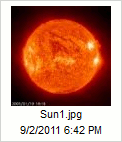
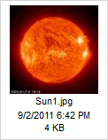

The Settings button that is available in the CKFinder Toolbar opens the Settings Pane where you can configure and customize CKFinder.
The figure below presents the file browser Settings Pane that is expanded when you click the toolbar button.

All settings are saved automatically by using Internet browser "cookies". "Cookies" are small files that store private configuration information for specific jeesites on your computer.
In order to close (collapse) the Settings Pane, press the Close button or click the Settings toolbar button once again.
All configuration options pertain to the Files Pane and control the way the files are displayed in CKFinder. The Files Pane will react immediately to changes introduced in the Settings Pane.
Sets the view mode in the Files Pane:
Sets the amount of information available in the Files Pane. The following options can be turned on and off:
If you are using the Thumbnails view mode, you can deselect all options. In the List mode the file name will always be displayed.
The image below presents various display options as viewed in the Thumbnail mode.
|  |  |  |
Sets the order in which the files will be listed. The following options are available: